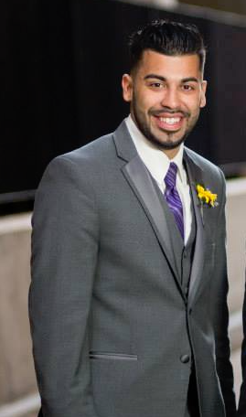

My name is Anthony Santiago and I am currently attending the UCF Coding Program. My home city of Rochester, NY is where I did most of my growing, although I did split time with living in Orlando, FL aswell. Due to some close friends influence, coding caught my interest. I made the plunge to attend the UCF program and have not looked back since. I enjoy every bit of learing and frustration when it comes to being taught the in's and out's. HTML, CSS, and Javascript have all equally intrigued me and frustrated me. But I am growing in knowledge and thats all one could ask for.
When I am not in class or working, I can be found continuing to practice learning code. Whether it be with friends who work in the field or alone, I continue to try and perfect my craft. I also enjoy playing video games, watching sports and also playing them. I am a huge fan of being outdoors so I like to frequent the theme parks here in Orlando. Spending time with friends and family is also something I try to do no matter how busy my schedule is.
I am hoping with the help of friends and the UCF Coding Bootcamp that I will be able to continue on this journey in my life, and find a job doing something that I will love. I am hard working, goal oriented and passionate about what I do. I look forward to hearing from you and discussing a future in business together.